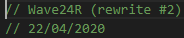

Crystal FM: A radio-like music bot for Discord

Overview
Crystal FM was born out of my love for music across various eras, combined with a desire to share that music with others. It was a radio-like music bot for Discord.
Unlike most bots on Discord, which serve on-demand song requests, Crystal FM simply offered easy access to a steady stream of cherry-picked songs.
The music Crystal FM played mostly consisted of pop & rock music released between the 1960s and 1990s. It was complemented by a wide range of unique instrumental tracks.
These tracks could've been songs I'd heard in movies, on the radio, or anywhere else where music happened to be playing.
Crystal FM was primarily used within a group of online friends who enjoyed listening to music together.
History
At first, Crystal FM was called Wave24R (Wave24 Radio), with the 24 referencing its 24/7 operation. It was accompanied by the Pre70sR (Pre-1970s Radio) bot, which focused on older music that didn't mesh well with Wave24's 80s and 90s tunes. By separating the two services, I could maintain a more consistent listening experience for users.
Development
Crystal FM was written in JavaScript and ran with the server-side runtime environment Node.js.
I hosted Crystal FM on a Dell OptiPlex 780 desktop computer for about a year from 2019, after which it was no longer practical to keep running.
Three iterations of the code powering Crystal FM have been and gone:
-
Wave24R Discord Bot
This version of Wave24R is a modular Discord bot made to represent different "brands" of music bot (such as Crystal FM), built on the idea that I could easily swap out playlists and simply rebrand bots to fit different themes.
-
Wave24R Icecast Server
This version of Wave24R was closer to a regular internet radio station. It created an audio livestream to broadcast the music to any client. This worked in parallel with a simple Discord bot I built to listen to the stream (amongst other internet radio stations) in any Discord voice channel.
To use it, you simply connected to a voice channel and sent a chat command specifying which station you wanted to listen to. -
Crystal FM based on "S.A.F.E."
This was the final rewrite of Crystal FM. It used a silly idea I came up with called "S.A.F.E." I can't really remember what the acronym stood for, but S.A.F.E. was my template launcher of sorts for a few of my future JavaScript programs and handled the configuration files, offered localization support and other repetitive tasks. It was my equivalent of a game engine for my JS programs. It didn't really stick.
Epilogue
If I were to revisit Crystal FM - or work on something similar - I would consider adding some of the features I had planned but never implemented.
One idea was a song rating system which would lower or increase the probability of a song playing depending on how current listeners have rated it. This would serve as a sort of global voting system that tries compromises for all listeners in a given voice channel. Other ideas I had planned included the automatic handling of seasonal music during Halloween and Christmas periods.
In the end, while I may be biased, I think Crystal FM was good while it lasted. Lots of great music was enjoyed using it, and I consider that a big success.